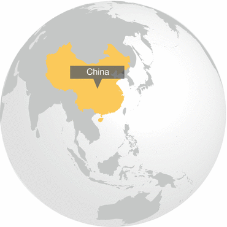
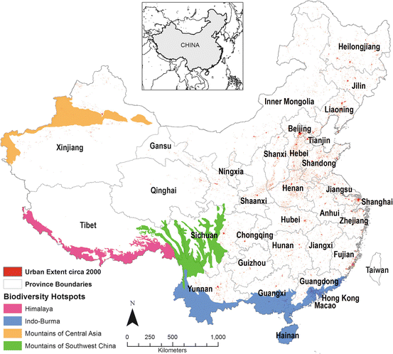
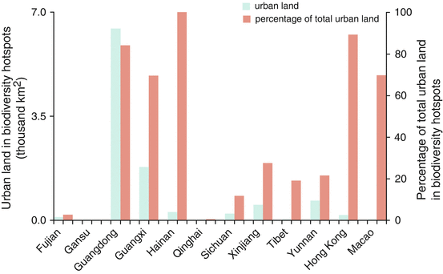

China has been urbanizing rapidly since the early 1980s. This is manifested by large rural-urban population migrations and by the expansion of urban areas and the built environment. One consequence of urban expansion has been the loss of fertile agricultural land. Another, less noticed, has been the urban expansion within biodiversity hotspots. Throughout the country, expansion of urban areas have increasingly threatened habitats critical for conservation of biodiversity (McLaren 2011). Especially along the coast, many ecosystems have been destroyed as a result of continuous building and development (Zhao et al. 2006). On the other hand, further inland and especially along major rivers, the economic development and urban growth has increasingly been impacting ecologically sensitive lands (Li 2012).
China is also among the most biodiverse countries in the world (McNeely et al. 1990; López-Pujol et al. 2006). The country contains four biodiversity hotspots that are home to significant diversity of endemic species that are threatened by human activities. The number of protected areas (PAs) in the country has increased in recent decades; a recent study identified China as a nation with 1,865 nature reserves (Wang et al. 2012), covering more than 10 % of the country’s territory. These PAs are particularly concentrated across the eastern half of the country where urbanization has also been the most dramatic.
Apart from studies that evaluate the past and current impacts of development on the country’s biodiversity there has been sparse quantitative analysis of the implications of future urban expansion. A recent study predicted that proximity of urban areas to PAs in the country will dramatically increase by 2030 (McDonald et al. 2009). By 2030, the urban population of China is expected to be over 900 million, an increase of over 300 million (UN 2010). While there are uncertainties around this estimate, there is even greater uncertainty about the location and amount of future urban expansion.
Recent analyses indicate that nearly half of the increase in urban land across the world is predicted to occur in Asia, with the largest increases in China and India (Seto et al. 2012). Within China, urban expansion is predicted to create a 1,800 km coastal urban corridor from Hangzhou to Shenyang. As urbanization progresses towards the western regions of the country, more of the biodiversity hotspots are likely to be affected by development and urban land conversion. A recent study forecasts direct impacts of urban expansion on biodiversity in China, but it does not elaborate on how these forecasted impacts vary across the country (Güneralp and Seto 2013). On the other hand, while invaluable to develop our understanding between urbanization and biodiversity conservation at specific localities, case-based studies are too few to generate a comprehensive outlook across the country.
Of the 34 biodiversity hotpots identified around the world (Myers et al. 2000; Mittermeier et al. 2004), four remain partially within China’s borders: Himalaya, Indo-Burma, the Mountains of Central Asia, and the Mountains of Southwest China (Fig. 5.1). In 2000, about 13 % of the total urban land in China – a little over 10,000 km2 – were located within these hotspots. Importantly, the urban land in the Indo-Burma hotspot constitutes 92 % of the total urban land across all four biodiversity hotspots. The Indo-Burma hotspot extends across several provinces; for example, Guangdong province had around 85 % of its total urban land area located within the hotspot in 2000 (Fig. 5.2). Moreover, the province accounts for more than two thirds of the total urban land cover in this hotspot and the most urban land in any biodiversity hotspot across China. It is followed by Guangxi and neighboring Yunnan, both of which have southern portions of their land in the Indo-Burma hotspot. Xinjiang in the northwest of the country also has considerable urban land (about 500 km2) in the hotspot Mountains of Central Asia; that is equal to about one fourth of the total urban land in the autonomous region (Fig. 5.2).

Fig. 5.1
Biodiversity hotspots and urban extent in China circa 2000 (Prepared by and published with kind permission of ©Burak Güneralp 2013. All Rights Reserved)

Fig. 5.2
The amount of urban land within biodiversity hotspots in 2000, and the corresponding percentage of the total urban land area in each of the provinces and special administrative regions that contain biodiversity hotspots (Published with kind permission of Burak Güneralp and modified by Maria Schewenius. ©Maria Schewenius 2013. All Rights Reserved)
Based on the IPCC scenarios and projected urban expansion rates in Seto et al. (2011), the urban land in biodiversity hotspots is projected to increase from about 10,000 km2 in 2000 to somewhere between 40,000 and 77,000 km2 by 2030. Of the four hotspots, Indo-Burma, which contained by far the most urban land (more than 9,000 km2) in 2000 (Fig. 5.1), is projected to have between 35,000 and 70,000 km2 urban land by 2030.
Apart from the Mountains of Southwest China hotspot which is nearly completely within China’s borders, the implications of urbanization in the other three biodiversity hotspots for their biodiversity and ecosystem functioning can be more accurately assessed through trans-border regional cooperation between China and its neighbors (Chettri et al. 2007). Such cooperative initiatives are especially pertinent for the Indo-Burma and Himalaya hotspots because urbanization is also rapidly progressing in those parts of these hotspots that are in other Southeast Asian countries including India (Seto et al. 2012). In addition, while not located within any hotspots, large urban agglomerations such as Chengdu in Sichuan and Ürümqi in Xinjiang are within less than 20 km of the Mountains of Southwest China and Mountains of Central Asia hotspots, respectively. The land use policies in such urban agglomerations should include strategies to direct growth away from the biodiversity hotspots.
Considering the primary importance of economic growth placed in performance evaluations of the local governments, proper evaluation of ecosystem services in these hotspots gains urgency so that they can be included in economic considerations of the local governments. In China, there are wide variations across the provinces in terms of the amounts and/or proportions of urban land in biodiversity hotspots. These differences across the provinces call for differentiated strategies to manage urban expansion to minimize its negative impacts on biodiversity and ecosystem functioning.
The threats to biodiversity hotspots come from direct land cover change that causes habitat loss and degradation of ecosystem functioning as well as indirect effects of urban encroachment. One such indirect effect is the increased incidence of colonization by introduced species as urban areas expand into these hotspots. Going beyond the physical expansion of urban areas in or near the biodiversity hotspots, the consumption patterns of urban inhabitants in general can adversely affect biodiversity and ecosystems in these sensitive areas even if they are not located in close proximity to each other (Seto et al. 2012). In particular, the reduction in household size with increasing urbanization has been shown to have large impacts on resource consumption and biodiversity (Liu et al. 2003). Moreover, urban expansion and population growth in one location may have knock on effects leading to land change cascades that can extend well into the more sensitive parts of biodiversity hotspots – both within the same country and across continents (DeFries et al. 2010). Such challenges cannot be met by local-level solutions only; they require policy responses at a much larger scale and thus call for appropriate strategies with sufficient breath, to be developed at the national and international levels.
Minimizing habitat and biodiversity loss and limiting degradation of ecosystem services require integrating ecological knowledge into urban and land use planning practices (Niemelä 1999) so that these practices become more attuned to conservation of biodiversity and preservation of ecosystem services (McDonald et al. 2008). However, if the past three decades are any indication, urban expansion dynamics in China will primarily be dominated by economic forces, which includes the role played by land transactions as a source of income for local governments (Frederic and Huang 2004; Yew 2012). Therefore, the current land market system needs to be reformed for urban planning to attain any meaningful level of success in conservation of biodiversity and preservation of ecosystem services.
Despite upbeat assessments on the trends of biodiversity loss in China (Xu et al. 2009), there is still cause for concern (Liu and Diamond 2005). How urban areas continue to expand may affect larger expanses of the biodiversity hotspots in the coming decades. There is thus a need for forward-looking studies to understand the likely rates, magnitudes, and patterns of urban expansion within the biodiversity hotspots at a range of spatial and temporal scales.
The scale of urbanization in China has so far been extraordinary and there is every indication that it will remain so in the coming decades. Thus, the impact of the country’s urban growth on biodiversity and ecosystems may surpass the extent of impacts we have witnessed across the world so far. The preliminary forecasts reported here are limited to the biodiversity hotspots, one of several conservation prioritization concepts. Another forecasting study reported that proximity of urban areas to the nature reserves in China will also dramatically increase by 2030 (McDonald et al. 2009). Moreover, these forecasts inform about the potential direct impacts of urban expansion on biodiversity, but not about its indirect impacts due to increasing demand for natural resources originating in urban environments. One such indirect impact is the construction of dams and other infrastructure to meet the rising energy demands mostly originating from urban areas. For example, the existing and planned dams along the Chinese portion of the Mekong River will have significant impacts on biodiversity both through land changes (including inundation behind dam walls) and through alteration of river flow (Dugan et al. 2010; Barrington et al. 2012). Both direct and indirect impacts of urbanization need to be taken into consideration for a complete account of its environmental impacts. Nevertheless, there is a critical window of opportunity in the next few decades for China to implement more proactive approaches to guiding urban expansion in ways that least negatively impact biodiversity and ecosystems.
References
Barrington, D. J., Dobbs, S., & Loden, D. I. (2012). Social and environmental justice for communities of the Mekong River. International Journal of Engineering, Social Justice, and Peace, 1(1), 31–49. http://library.queensu.ca/ojs/index.php/IJESJP/article/view/3515.
Chettri, N., Thapa, R., & Shakya, B. (2007). Participatory conservation planning in Kangchenjunga transboundary biodiversity conservation landscape. Tropical Ecology, 48(2), 163–176.
DeFries, R. S., Rudel, T., Uriarte, M., & Hansen, M. (2010). Deforestation driven by urban population growth and agricultural trade in the twenty-first century. Nature Geoscience, 3(3), 178–181.CrossRef
Dugan, P. J., Barlow, C., Agostinho, A. A., Baran, E., Cada, G. F., Chen, D., Cowx, I. G., Ferguson, J. W., Jutagate, T., Mallen-Cooper, M., Marmulla, G., Nestler, J., Petrere, M., Welcomme, R. L., & Winemiller, K. O. (2010). Fish migration, dams, and loss of ecosystem services in the Mekong basin. Ambio, 39(4), 344–348.PubMedCrossRef
Frederic, D. F., & Huang, Y. (2004). Uneven land reform and urban sprawl in China: The case of Beijing. Progress in Planning, 61(3), 211–236.CrossRef
Güneralp, B., & Seto, K. C. (2013). Futures of global urban expansion: Uncertainties and implications for biodiversity conservation. Environmental Research Letters, 8, 014025.CrossRef
Li, P. (2012). Ecological importance zoning and its spatial overlay relationships with construction lands in Xijiang River Economic Belt of Guangxi, South China. Chinese Journal of Ecology, 31(10), 2651–2656.
López-Pujol, J., Zhang, F. M., & Ge, S. (2006). Plant biodiversity in China: Richly varied, endangered, and in need of conservation. Biodiversity and Conservation, 15(12), 3983–4026.CrossRef
McDonald, R. I., Kareiva, P., & Formana, R. T. T. (2008). The implications of current and future urbanization for global protected areas and biodiversity conservation. Biological Conservation, 141(6), 1695–1703.CrossRef
McDonald, R. I., Forman, R. T. T., Kareiva, P., Neugarten, R., Salzer, D., & Fisher, J. (2009). Urban effects, distance, and protected areas in an urbanizing world. Landscape and Urban Planning, 93(1), 63–75.CrossRef
McLaren, A. E. (2011). Environment and cultural heritage in China: Introduction. Asian Studies Review, 35(4), 429–437.CrossRef
McNeely, J., Miller, K., Reid, W., Mittermeier, R., & Werner, T. (1990). Conserving the world’s biological diversity (193pp.). Gland/Washington, DC: IUCN/WRI, Conservation International, WWF-US, World Bank.
Mittermeier, R. A., Robles-Gil, P., Hoffmann, M., Pilgrim, J. D., Brooks, T. B., Mittermeier, C. G., Lamoreux, J. L., & Fonseca, G. A. B. (2004). Hotspots revisited: Earth’s biologically richest and most endangered ecoregions. Mexico City: CEMEX, 390pp.
Niemelä, J. (1999). Ecology and urban planning. Biodiversity and Conservation, 8(1), 119–131.CrossRef
UN. (2010). World urbanization prospects: The 2009 revision. New York: United Nations Department of Economic and Social Affairs/Population Division.
Xu, H., Tang, X., Liu, J., Ding, H., Wu, J., Zhang, M., Yang, Q., Cai, L., Zhao, H., & Liu, Y. (2009). China’s progress toward the significant reduction of the rate of biodiversity loss. BioScience, 59(10), 843–852.CrossRef
Yew, C. P. (2012). Pseudo-urbanization? Competitive government behavior and urban sprawl in China. Journal of Contemporary China, 21(74), 281–298.CrossRef
Zhao, S. Q., Da, L. J., Tang, Z. Y., Fang, H. J., Song, K., & Fang, J. Y. (2006). Ecological consequences of rapid urban expansion: Shanghai, China. Frontiers in Ecology and the Environment, 4(7), 341–346.CrossRef